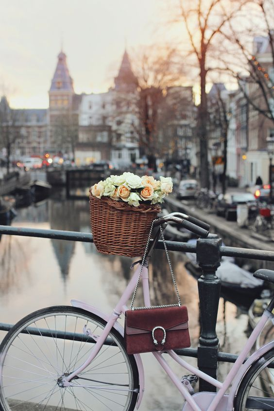

AUSTRIA
Austria has a long history of being multicultural country: a glance at the Vienna phone book is all you need to discover this.
GREAT BRITAIN
Great Britain, also known as Britain, is a large island in the north Atlantic Ocean off the northwest coast of continental Europe.
FRANCE
France has been the world's most popular tourist destination for quite some time.
SWITZERLAND
The Swiss summer will bring you back to nature – with your own muscle power! Whether on spectacular trails, endless hiking paths, winding mountain pass roads or a bicycle tour across Switzerland.
BULGARIA
Bulgaria is one of the few exotic nations of Europe, due to the fact that it boasts sublime beaches, lovely churches, winter sport opportunities and great hiking, to name a few.
HUNGARY
Hungary is one of the 15 most popular tourist destinations in the world, with a capital regarded as one of the most beautiful in the world.
MOLDOVA
Moldova's cultural tradition has been influenced primarily by the Romanian origins of its majority population, the roots of which go back to the 2nd Century AD.
CZECH REPUBLIC
The Czech Republic is not a geographically large country, but it has a rich and eventful history.
ICELAND
Iceland is one of the safest countries in the world. Crime rate is extremely low and medical care is excellent. However, it is necessary to take precaution when travelling in Iceland due to natural hazards caused by weather and nature, where conditions can change at a moments notice.
NORWAY
The overall impression of Norway is a country with ample space and unusually rugged landscape. While famous for the great fjords along the Atlantic, also the interior has great valleys, wide forests and fjord-like lakes. Norway is one of the most mountainous countries in Europe.
FINLAND
Fans of Northern Lights, sauna and Santa Claus won’t be surprised to hear Finland has been named the happiest place to live.
GREECE
Ancient sun-bleached ruins pierce blue skies as the Aegean laps at the endless coastline. And Greek culture is alive with passionate music, inspired cuisine and thrill-seeking activities.
SPAIN
With great beaches, fun nightlife, many cultural regions and historic cities, Spain makes a great destination for any kind of trip. A country of large geographic and cultural diversity, Spain is a surprise to those who only know its reputation for great beach holidays.
ITALY
Italy is famous for its delicious cuisine, its trendy fashions, luxury sports cars and motorcycles, diverse regional cultures and dialects, as well as for its various sceneries from the seas to the Alps and Apennines, which makes reason for its nickname Il Bel Paese.